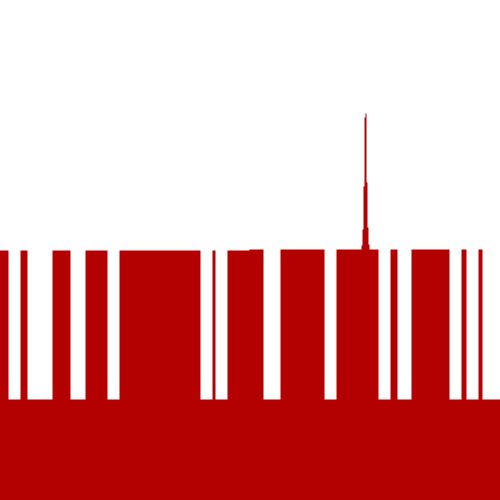

Run of
com.github.skac112.klee.painters.FingerComb
painter
Time:
22-12-03_01:10:17
Git hash: f47110d
Painter parameters
randSeed:
3
averageLen:
0.3
numFinger:
20
Render parameters
X range: <-0.5; 0.5>
Y range: <-0.5; 0.5>
nx: 500, ny: 500
